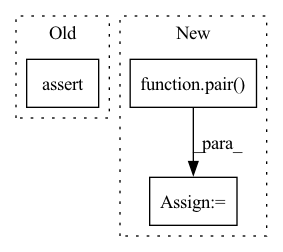

Pattern ID :28828
Before Change
prob_survival = 1.
):
super().__init__()
assert (image_size % patch_size) == 0, "image size must be divisible by the patch size"
dim_ff = dim * ff_mult
num_patches = (image_size // patch_size) ** 2
After Change
prob_survival = 1.
):
super().__init__()
image_height, image_width = pair( image_size)
assert (image_height % patch_size) == 0 and (image_width % patch_size) == 0, "image height and width must be divisible by patch size"
num_patches = (image_height // patch_size) * (image_width // patch_size)
dim_ff = dim * ff_multIn pattern: SUPERPATTERN
Frequency: 6
Non-data size: 3
Instances Fragment ID: 84757901
Project Name: lucidrains/g-mlp-pytorch
Commit Name: 6549354944bd8fea79fa441538eafcf7f40fba93
Time: 2021-06-10
Author: lucidrains@gmail.com
File Name: g_mlp_pytorch/g_mlp_pytorch.py
M Class Name: gMLPVision
N Class Name: gMLPVision
M Method Name: __init__(1)
N Method Name: __init__(1)
M Parent Class: nn.Module
N Parent Class: nn.Module
M File Name: g_mlp_pytorch/g_mlp_pytorch.py
N File Name: g_mlp_pytorch/g_mlp_pytorch.py
M Start Line: 184
M End Line: 186
N Start Line: 187
N End Line: 189
Before Change
return self.fn(self.affine(x)) * self.scale + x
def ResMLP(*, image_size, patch_size, dim, depth, num_classes, expansion_factor = 4):
assert (image_size % patch_size) == 0, "image must be divisible by patch size"
num_patches = (image_size // patch_size) ** 2
wrapper = lambda i, fn: PreAffinePostLayerScale(dim, i + 1, fn)
After Change
return self.fn(self.affine(x)) * self.scale + x
def ResMLP(*, image_size, patch_size, dim, depth, num_classes, expansion_factor = 4):
image_height, image_width = pair( image_size)
assert (image_height % patch_size) == 0 and (image_width % patch_size) == 0, "image height and width must be divisible by patch size"
num_patches = (image_height // patch_size) * (image_width // patch_size)
wrapper = lambda i, fn: PreAffinePostLayerScale(dim, i + 1, fn)
Fragment ID: 84757900
Project Name: lucidrains/res-mlp-pytorch
Commit Name: 562814a406cc418bdb4710aa3bdc569206ac171b
Time: 2021-06-03
Author: lucidrains@gmail.com
File Name: res_mlp_pytorch/res_mlp_pytorch.py
M Class Name: AnonimousClass
N Class Name: AnonimousClass
M Method Name: ResMLP(0)
N Method Name: ResMLP(0)
M Parent Class:
N Parent Class:
M File Name: res_mlp_pytorch/res_mlp_pytorch.py
N File Name: res_mlp_pytorch/res_mlp_pytorch.py
M Start Line: 33
M End Line: 34
N Start Line: 40
N End Line: 42
Before Change
):
super().__init__()
image_height, image_width = pair(image_size)
assert (image_height % patch_size) == 0 and (image_width % patch_size) == 0, "image height and width must be divisible by patch size"
num_patches = (image_height // patch_size) * (image_width // patch_size)
dim_ff = dim * ff_multAfter Change
):
super().__init__()
image_height, image_width = pair(image_size)
patch_height, patch_width = pair( patch_size)
assert (image_height % patch_height) == 0 and (image_width % patch_width) == 0, "image height and width must be divisible by patch size"
num_patches = (image_height // patch_height) * (image_width // patch_width)
dim_ff = dim * ff_mult Fragment ID: 84757902
Project Name: lucidrains/g-mlp-pytorch
Commit Name: 11c7115ed507722cc14a03ddfcad797da042629d
Time: 2021-06-10
Author: lucidrains@gmail.com
File Name: g_mlp_pytorch/g_mlp_pytorch.py
M Class Name: gMLPVision
N Class Name: gMLPVision
M Method Name: __init__(1)
N Method Name: __init__(1)
M Parent Class: nn.Module
N Parent Class: nn.Module
M File Name: g_mlp_pytorch/g_mlp_pytorch.py
N File Name: g_mlp_pytorch/g_mlp_pytorch.py
M Start Line: 188
M End Line: 195
N Start Line: 188
N End Line: 196
Before Change
class ViT(nn.Module):
def __init__(self, *, image_size, patch_size, num_classes, dim, depth, heads, mlp_dim, pool = "cls", channels = 3, dim_head = 64, dropout = 0., emb_dropout = 0.):
super().__init__()
assert image_size % patch_size == 0, "Image dimensions must be divisible by the patch size."
num_patches = (image_size // patch_size) ** 2
patch_dim = channels * patch_size ** 2
assert pool in {"cls", "mean"}, "pool type must be either cls (cls token) or mean (mean pooling)"After Change
class ViT(nn.Module):
def __init__(self, *, image_size, patch_size, num_classes, dim, depth, heads, mlp_dim, pool = "cls", channels = 3, dim_head = 64, dropout = 0., emb_dropout = 0.):
super().__init__()
image_height, image_width = pair( image_size)
patch_height, patch_width = pair(patch_size)
assert image_height % patch_height == 0 and image_width % patch_width == 0, "Image dimensions must be divisible by the patch size."
Fragment ID: 84757897
Project Name: lucidrains/vit-pytorch
Commit Name: 654952262927eaa6d8519ad0876e25f3c1f51c25
Time: 2021-05-01
Author: lucidrains@gmail.com
File Name: vit_pytorch/vit.py
M Class Name: ViT
N Class Name: ViT
M Method Name: __init__(1)
N Method Name: __init__(1)
M Parent Class: nn.Module
N Parent Class: nn.Module
M File Name: vit_pytorch/vit.py
N File Name: vit_pytorch/vit.py
M Start Line: 77
M End Line: 79
N Start Line: 84
N End Line: 90
Before Change
)
def MLPMixer(*, image_size, channels, patch_size, dim, depth, num_classes, expansion_factor = 4, expansion_factor_token = 0.5, dropout = 0.):
assert (image_size % patch_size) == 0, "image must be divisible by patch size"
num_patches = (image_size // patch_size) ** 2
chan_first, chan_last = partial(nn.Conv1d, kernel_size = 1), nn.Linear
After Change
)
def MLPMixer(*, image_size, channels, patch_size, dim, depth, num_classes, expansion_factor = 4, expansion_factor_token = 0.5, dropout = 0.):
image_h, image_w = pair( image_size)
assert (image_h % patch_size) == 0 and (image_w % patch_size) == 0, "image must be divisible by patch size"
num_patches = (image_h // patch_size) * (image_w // patch_size)
chan_first, chan_last = partial(nn.Conv1d, kernel_size = 1), nn.Linear
Fragment ID: 84757899
Project Name: lucidrains/mlp-mixer-pytorch
Commit Name: 54b08248956464f4361127715738194a1d0d92d5
Time: 2022-02-16
Author: lucidrains@gmail.com
File Name: mlp_mixer_pytorch/mlp_mixer_pytorch.py
M Class Name: AnonimousClass
N Class Name: AnonimousClass
M Method Name: MLPMixer(0)
N Method Name: MLPMixer(0)
M Parent Class:
N Parent Class:
M File Name: mlp_mixer_pytorch/mlp_mixer_pytorch.py
N File Name: mlp_mixer_pytorch/mlp_mixer_pytorch.py
M Start Line: 25
M End Line: 26
N Start Line: 27
N End Line: 29
Before Change
class ViT(nn.Module):
def __init__(self, *, image_size, patch_size, num_classes, dim, transformer, pool = "cls", channels = 3):
super().__init__()
assert image_size % patch_size == 0, "image dimensions must be divisible by the patch size"
assert pool in {"cls", "mean"}, "pool type must be either cls (cls token) or mean (mean pooling)"
num_patches = (image_size // patch_size) ** 2
patch_dim = channels * patch_size ** 2After Change
class ViT(nn.Module):
def __init__(self, *, image_size, patch_size, num_classes, dim, transformer, pool = "cls", channels = 3):
super().__init__()
image_size_h, image_size_w = pair( image_size)
assert image_size_h % patch_size == 0 and image_size_w % patch_size == 0, "image dimensions must be divisible by the patch size"
assert pool in {"cls", "mean"}, "pool type must be either cls (cls token) or mean (mean pooling)"
num_patches = (image_size_h // patch_size) * (image_size_w // patch_size)
patch_dim = channels * patch_size ** 2 Fragment ID: 84757898
Project Name: lucidrains/vit-pytorch
Commit Name: 1bae5d3cc58448f05d1252be306bbf48d9c5fede
Time: 2022-01-31
Author: lucidrains@gmail.com
File Name: vit_pytorch/efficient.py
M Class Name: ViT
N Class Name: ViT
M Method Name: __init__(1)
N Method Name: __init__(1)
M Parent Class: nn.Module
N Parent Class: nn.Module
M File Name: vit_pytorch/efficient.py
N File Name: vit_pytorch/efficient.py
M Start Line: 9
M End Line: 11
N Start Line: 12
N End Line: 15